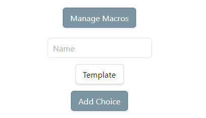

碎碎念 step by step
第一步：数据结构
你的数据想要存储成什么样子，那么看一下我用的格式：
- 碎碎念的内容 ➕ 这一条添加的时间 ^blockID解析如下：
- 短划线开头，表明这是一个列表项，列表项也可以用星号开头，不过我习惯用短划线。
- 既然是列表项，就意味着不能使用复杂的格式，更类似于早期 140 字的微博。
- ➕ 不是随便使用的，是一些插件也支持用这个符号来标记任务中的添加时间（但这些插件只支持日期，不带时间部分）
- blockID 是一串字母数字的组合，来标记这个位置，方便链接到这里。
看一下实际应用效果：
- 非常简陋的私人微博 ➕ 2023-11-17 10:20:03 ^Digu1700187603078第二步：确定存储
我存储在 Life/Logs 文件夹下，因为碎碎念的数量并不多，并且是以列表形式存储，所以我把一年的碎碎念都放在同一个文件内。如：Life/Logs/2023.md
当然你可以选择按月份、按日期等方式存储。
第三步：设置 QuickAdd
注意：QuickAdd 弹出的输入框在你按下 Esc 按键时会直接消失，导致未保存的数据丢失，留意一下这个细节就好。
进入 QuickAdd 之后开启 Use Multi-line Input Prompt，多行输入框是很适合用来碎碎念的，但这是一个全局设定，日后有多条 QuickAdd 动作之后可以考虑这个设定的取舍。
然后我们开始添加 Capture。这里说一个小技巧，QuickAdd 的设置中排版有点误导理解，你把窗口宽度调窄一点，忽然就变得好懂了。大概是这样的结构：

- 按钮：Manage Macros —— 显然这不是我们需要的
- 输入框：Name —— 输入一个名字
- 下拉选框：Template —— 默认选择 Template 的选择框，点一下，看到四个选项，先不追求弄懂，我们就先选择 Capture
- 按钮：Add Choice —— 到这里忽然就理解了，第一个按钮和我们无关。然后取个名字，选择类型，点击这个按钮添加。
添加以后上面就出现了这个名字的内容，后面有五个图标：闪电、齿轮、两个方框、垃圾桶、三根横线，这些图标应该能够理解个大概，我们点亮闪电（用途后面讲解），然后点击齿轮图标进行设置。
依旧是设置界面有点乱，你得先仔细分清每一项才好理解。
Capture to active file捕获到当前文件中，显然不是我们希望的，所以这项应该关掉File Name你希望捕获到的文件路径，这里支持一些特殊变量，可以到这里查询： https://quickadd.obsidian.guide/docs/FormatSyntax ，我们填写：Life/Logs/{{DATE:YYYY}}，这里我省略了文件末尾的.md，也可以写上。{{DATE:YYYY}}代表了日期，具体格式用四位数年份。Create file if it doesn't exist如果不存在这个文件就创建它，这项打开，这样到了明年就能自动创建文件了，无缝跨年。Create file with given template.用给定的模板来创建新文件，这一项我没开，因为我懒得再去写个模板了。Task以任务形式添加，这个关掉Write to bottom of file内容添加到文件末尾，这个我关了，因为我希望新添加的内容在最顶部。但这样会导致后面的设置稍微复杂一点Append link追加链接，这个我们不需要Insert after我们不添加到文件底部，那默认就会添加到文件顶部，但是文件顶部有 front matter（就是文档属性）的内容，这样就混乱了，所以就需要设置一下这里，开启此项后会新增几个选项，我们逐个看：- 输入框，在什么之后插入，这里需要给它一个特定的内容用来定位。我是在那个碎碎念文件（
Life/Logs/2023.md）的开始加了一个二级标题，所以这里填写## 碎碎念\n，\n代表了一个换行，但其实这里写两个换行最合适，然而它不支持，写一个 OK，写两个它就搞错。 Insert at end of section在这个章节的末尾插入，显然这不是我们想要的，就不要打开Consider subsections考虑分段，这是高级格式，反正我们不需要Create line if not found如果没找到这行（用来定位的内容），则创建。我们在什么时候会遇到这种情况呢，就是到明年，程序自动新建 2024 年的碎碎念文件，这时候是个空白文件，没有定位用的标题行，那它自动创建就省得我写模板了，而且因为那时候还完全是空白文件，这一行插入在上面下面都没所谓，不过为了避免和 front matter 冲突，我们选择插入在末尾。所以开启，后面选项选择bottomOpen插入内容之后是否打开这个文件，应该不需要吧，所以关掉就好。Capture format捕获格式，这个要开启，我们自己定义好每一条的具体格式。
- 输入框，在什么之后插入，这里需要给它一个特定的内容用来定位。我是在那个碎碎念文件（
格式这里应该比较容易写出来：
- {{value}} ➕ {{date}} {{time}} ^Digu{{DATE:x}} 代表我们输入的内容，{{DATE:x}}，代表毫秒级的时间戳，如果写成大写的 X 则是秒级的时间戳，都可以。
但是这样并不完美，因为我们前面说了，标题后面加两个换行再写新内容比较合适，结果定位的时候只允许我们写一个换行，这样用起来会标题和列表连在一起，不好看。所以要把这缺少的换行补充在这条格式里。
- {{value}} ➕ {{date}} {{time}} ^Digu{{DATE:x}}就是在上面加了一个空行。这里先照抄就行，熟悉了再尝试理解。然后保存就好了。
第四步：使用
按下 Ctrl + P ，就会弹出命令面板，输入 QuickAdd（不用输入全，一般写个 QA 就行了，不区分大小写），就会列出 QuickAdd 的全部命令了。其中QuickAdd: 表示这个命令来自 QuickAdd 这个插件，Run QuickAdd 是主命令，选择这个，就会列出你在 QuickAdd 中添加的所有动作了，然后选择使用。
显然上面的比较繁琐，而且刚才你在筛选命令的时候应该也看到了：QuickAdd: [你取的名字] 这么一条命令，选择这个就就可以执行刚才设定的 Capture 了。而这条之所以会出现在这里，是因为我们点亮了那个闪电图标，如果没有点亮则不会列在命令面板中。
当然，还是麻烦。进入设置，快捷键，右上角搜索框输入 QuickAdd，是不是就看到刚才那条命令了，给它设置一个快捷键，比如： Ctrl + Q，于是你就可以随时在 Obsidian 中按下这个快捷键，然后开始碎碎念了。
到这里，用 QuickAdd 添加碎碎念的教程就结束了。但碎碎念之路……怎么可能到此完结呢（
第五步：就微博
去爱发电下载附件，解压，找到里面的 Dataview/Pages/DiguDigu 文件夹，整个放到你的仓库里，爱放哪里放哪里……那里面有个使用说明，然后你需要安装 Dataview 插件，这个弄好之后就可以获得我在群里炫耀的那个微博界面了。
第六步：有技巧
前面说过 QuickAdd 那个输入框容易丢数据，那最好的方法就是写好内容复制了，打开输入框，粘贴进去，提交。就不优雅！
仔细看前面给的那个变量的参考链接 代表的是什么呢？当然是输入框的内容，但如果在当前编辑器中有文字内容被选中，则用选中内容作为该值。也就是说，你先在随意笔记里写好，选中，一按快捷键，内容就添加到碎碎念里去了。
第五步中的那个视图是会缓存未提交的内容的，比较安全。
第七步：Anywhere
用 Advanced URI 插件可以创建链接，打开链接就打开对应的笔记或者命令，或者什么什么的。
安装这个插件之后，Ctrl + P 打开命令面板，输入 aduri 找到 Advanced URI:copy URI for command 这个命令，意思是复制特定命令的 URI，选择后会让你选择一个文件，就选择第一项：<Don't specify a file> 表示不特定哪个文件，反正你给我运行命令就是了；然后找到前面设定的那条 QuickAdd 命令，就是快速添加碎碎念那个，确定，得到一个类似下面的链接：
obsidian://advanced-uri?vault=Notes&commandid=quickadd%253Achoice%253A404c557d-d9f2-4d1b-8d4f-5b0c115c4395尝试关掉 Obsidian，然后在浏览器中打开这个链接，于是，不光 Obsidian 被打开了，还弹出了碎碎念的输入框。我会在 uTools 里用“快捷命令”这款插件来调用这个链接，当然各种其他插件都可以，毕竟，这里需要的只是打开一个链接。
我还会在手机（Android）上用“快捷方式”或者“Anywhere~”来调用这个链接，实现在手机上的快速碎碎念。
如果多读一读 Advanced URI 的文档，并有一点编程基础的话，也可以实现在其他地方编辑完内容，一键发送进 Obsidian 中， 比如在 uTools 的输入框里碎碎念，然后快速发送过来。
第八步：举栗子
uTools 安装“快捷命令”插件。再次提醒，上面给出那个链接随便一个网址收藏类插件都能解决，下面展示为什么我用这个插件。
uTools 中输入“新建快捷命令”，进入新建命令面板。
左侧：
- 匹配类型：关键词
- 关键词：
Digu，然后回车（这里可以根据你的爱好随便写）
右侧粘贴如下代码，可能无法使用 Ctrl + V 进行粘贴，右键然后选择 Paste 就行了。留意一下上方的环境为：quickcommand 。
const lengthNum = (num, length = 2) => String(num).padStart(length, '0');
const now = new Date()
const year = now.getFullYear()
const month = lengthNum(now.getMonth() + 1)
const day = lengthNum(now.getDate())
const hour = lengthNum(now.getHours())
const minute = lengthNum(now.getMinutes())
const notePath = `Life/Logs/${year}.md`
const replaceMark = `## 碎碎念\\n\\n`
const input = '{{subinput:DiguDigu}}'.trim()
if(input) visit(`obsidian://advanced-uri?filepath=${encodeURIComponent(notePath)}&searchregex=${encodeURIComponent(encodeURIComponent(replaceMark))}&replace=${encodeURIComponent(encodeURIComponent(`## 碎碎念
- ${input} ➕ ${year}-${month}-${day} ${hour}:${minute} ^Digu${+now}
`))}`)其中 const notePath = 后面照猫画虎改为自己的路径。保存。
然后在 uTools 中输入 Digu（你设定的关键词）回车，然后输入碎碎念的内容，再回车，不出意外就自动插入到你的碎碎念笔记中了。出意外……可能那个笔记就乱了，2333
这样就实现了在软件外先输入再启动软件进行保存，不过这个输入框也可能丢数据。